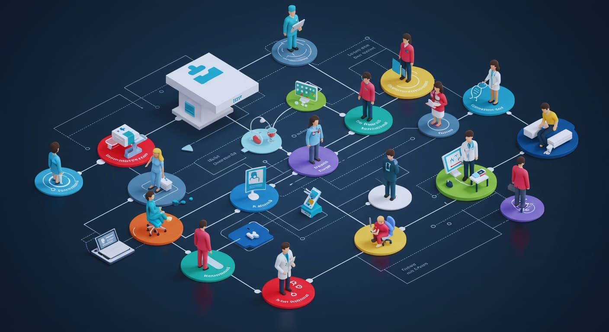

医療業界では、経営が不安定な医療機関や倒産リスクを抱える職場も少なくありません。
MediMatchでは、医療経営コンサルタントが在籍し、
各医療機関の財務や経営基盤を丁寧に分析。
"安定して長く働ける環境"だけを厳選してご紹介しています。
一人ひとりのキャリアを、経営の視点から守ります。
無料で相談してみる（LINE）
医療職の転職でよくあるお悩み
求人情報だけでは、その医療機関が経営的に安定しているのか分からず、不安を感じている。
職場の雰囲気や働き方が自分に合うのか、入職前に見極める方法が分からない。
大きな不満はないが満たされない。転職するべきなのか、今の職場で頑張るべきなのか、答えが出せない。
とにかく応募させようとする紹介会社が多く、本当に自分に合った求人を見つけられない。
MediMatchなら、これらのお悩みを解決できます。
医療経営の専門家が、あなたの本心に寄り添いながら、最適なキャリアをサポートします。
急性期病院の事務長として、これまで1,000名以上の面接に立ち会い、採用責任者として医療現場の"リアル"を見てきました。
現在は医業経営コンサルタント資格を持つキャリアエージェントとして、医療従事者一人ひとりの「納得の転職」を支援しています。
転職の大切なポイントのひとつに、その医療機関が経営的に安定しているのかという視点があります。しかし、ここまで詳しく教えてくれる紹介会社が少ないのが現実です。MediMatchでは医療機関の経営状況を分析し、業績や財務状況、将来の成長性に至るまで、あなたにとって重要な要素をすべて洗い出します。
この情報を基に、安定した経営基盤を持つ医療機関を厳選し、あなたが長期的にキャリアを築いていける場所をご提案いたします。
ただ単に求人を紹介するのではなく、あなたがこれまで培ってきた経験やスキル、そして大切にしたい価値観をしっかりとヒアリングし、最適な職場環境を見極めます。
MediMatchのアプローチは、あなたがこれから働く場所が「自分らしく、長く活躍できる場所」であることに焦点を当てています。
そのため、医療機関の特色や職場環境、チームの雰囲気、さらにはあなたの成長をサポートできる体制などを考慮して、一つひとつ厳選してご提案いたします。
MediMatchでは、あなたの背景や価値観を丁寧にヒアリングし「本当に転職すべきかどうか」から一緒に考えます。
転職を急かすのではなく、元・急性期病院の事務長であり医療経営を熟知した専属コンサルタントが今の職場の評価やキャリアの整理をサポートします。
たとえ今は転職しないという選択になっても"納得できる選択をする"ことこそが一番のゴールなのです。
大きな不満はない。
でも毎日どこか満たされない。
転職したいのか、現状維持でいいのか、本音がよく分からないから、
誰かに話すこともできない
——そんな状態になっていませんか？
MediMatchでは、答えが分からなくても、悩みの言語化を一緒に行うところから始めます。あなた自身が気づいていない価値観や、無意識のストレスを丁寧に掘り起こすことで「本当は何に満足していないのか」が見えてくる。
"求人紹介"の前に、"自己理解"の時間を。
人生に迷ったときほど、専属アドバイザーと一緒に考える時間が大きな意味を持ちます。
FAQ
はい。医療機関から紹介料をいただく仕組みのため、求職者の方の費用は一切かかりません。
いいえ。ご紹介後にお断りいただいても問題ありません。
経歴・希望・価値観をヒアリングし、経営状況や職場の雰囲気まで考慮して提案します。
はい。LINEのみ・週1回など、ご希望に応じて柔軟に対応します。
ご安心ください。ご本人の同意なしに情報が開示されることはありません。
まずは気軽に相談してみませんか？
転職を迷っている方もご安心ください。
まずは相談することから始めましょう。
MediMatchのキャリア診断で、あなたの適性や価値観を見つけましょう。
5分で完了する簡単な診断で、今のあなたに必要なキャリアの方向性が見えてきます。